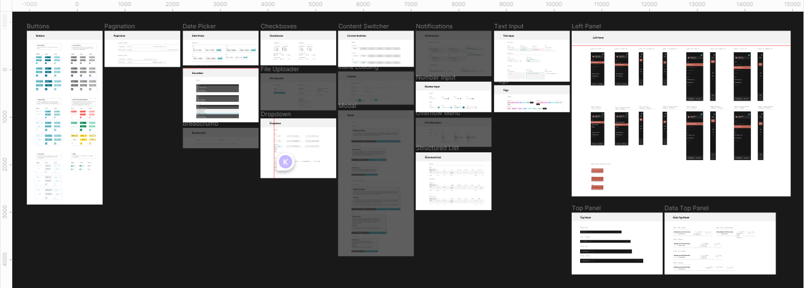
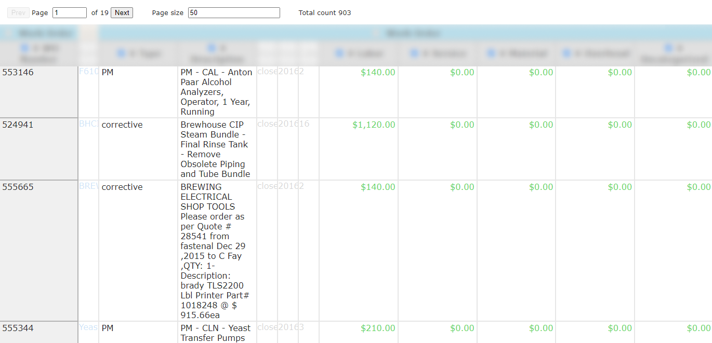
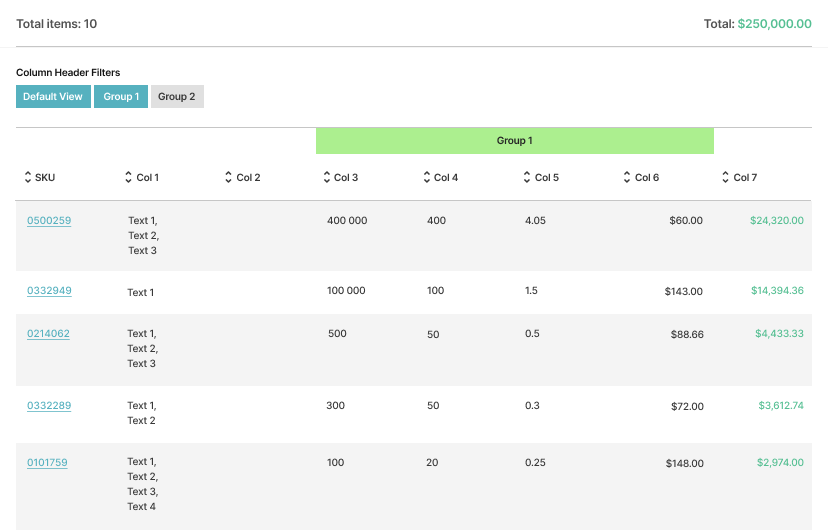

UX/UI for a SaaS product focused on minimizing operational downtime and optimizing inventory, streamlining the workforce and increasing profitability.
Perspect Analytics is built on advanced AI/ML technologies and extensive experience in maintenance, provides the best software solutions and professional service to organizations in manufacturing, infrastructure, facilities and other asset-intensive industries to streamlining and optimizing their operations
Led the design for the main product (IntelligentMRO) in all aspects of UX/UI. Created the design system for the product which the Engineering team referenced, and for future Designers to build upon. Co-developed alongside Engineering updating data columns for each unique KPIs.
+ Released IntelligentMRO 1.0
+ Improved product based off of user feedback from partners.
Perspect Analytics | 11 months
1 UX/UI Designer, 1 Product Manager, 1 Director, 1 Lead Software Engineer, 1 Senior Software Engineer
Before joining the team, the weekly meeting comprised of only two set days in which the engineering team would get together and do code reviews and have a product review. I established a new meeting day for design reviews with the PMs and the Engineering team. After 6 months, I felt that I lacked the chance to update the PMs about the product design. I decided to schedule a quick meeting block every Friday morning to specifically talk with the PMs about the product.
I would visit the main office once bi-weekly to touch base with the entire team. It was a nice change of pace. The PMs and Engineering team could quickly ask me any questions and would receive immediate feedback. I would be able to suggest many different designs on the spot, and receive immediate feedback from the entire team.
Due to Engineering constraints, there could only be one portal that all users could enter the product. The legacy product could not translate different views for different users, and the new product design needed to be able to show information for different users at any given time.
Needed to see the overall status of their systems. For example, how many entities each factory is producing, the cost for production, the general status of each supply line, general annual costs, and most importantly, profit generation.
Needed to see potential savings, unit costs of SKUs, work order costs, holding costs, potential holding cost reductions, and purchase order costs, etc.
Needed to be able to tell what SKUs were missing in inventory, what machines needed to be repaired, what parts to order, what work orders have been done, what work orders were placed, and the timing of parts delivered, etc.
My Manager first introduced me to the MRO landscape by presenting a low-level slide deck for me. Once I was comfortable with the glossary, and practices within the MRO industry, I developed two UX Benchmarks.
Developed a high-level timeframe (in Confluence) outlining estimated time completions for certain milestones in the product design pipeline.
To measure the current UX viability of the initial product, I referenced Googles Heart Framework which uses Happiness, Engagement, Adoption, Retention, and Task Effectiveness/Efficiency as metrics of evaluation.
After benchmarking the current products' UX, learning about the problem, I dived into learning about the different KPIs used within the data analytics platform. Once I understood most of the KPIs, I worked with my PMs to establish a user flow for the new UX/UI overhaul of the product.
I referenced the Carbon Design System, but used it as a basis to know which design tokens the product lacked/needed. I built every design token and component from scratch. I worked closely with the Engineering team to design a cohesive, and understandable system that they could reference and use with ease.

Design Tokens
Components
After understanding the user flow and synthesizing the research, I began designing for the first prioritized product feature called “Virtual Consultant”. The Virtual Consultant uses ML and AI techniques to provide specific advice to successfully and sustainably improve MRO operations.
VC = Virtual Consultant
The VC’s primary design was to provide managers and executives with immediate actions they can take to reduce holding costs. This design allowed for managers and executives to quickly identify the problem at hand. The algorithms within Virtual Consultant saves managers time from having to look into the raw data.
If any managers/executives wanted to look into the raw data, the VC would allow for them to do so. They would also be able to filter, group, sort, and search for anything specific they needed to pull for a data point.
Some KPIs could comprise of 20+ different data points that could be displayed. The problem is, it is very difficult to display 20 columns on one digital screen
The old design involved allowing the user to manually click on a column to hide it. This had many problems, such as the column still being present on the screen, as well as the initial onboarding was confusing for users.
Instead of making the user manually click on each column to hide it, I grouped each data point that fell under the same category, and put them into a toggle button. This freed up the space on top of the data points and allowed for quicker dismissal of data
Due to the nature of SKUs, the legacy systems' form of navigation was very complicated. Entities and SKUs would get lost in searches as users would be juggling between two different side panels. Another issue was they had to navigate a folder-search design when diving deeper into the entity's SKUs.
The legacy system had three layers for the left panel. This design was complicated for first-time users to use and did not follow regular UX conventions for left panels. The new design centred around organizing the hierarchy of the different programs. Once the user selects their preferred program, the left panel would have the respected modules of the program. In the CI program, the modules would be collapsable to show different groupings of KPIs.
Legacy

New Design
Due to the large amounts of different types of KPIs, organizing each in their respected groupings is important within the product. However, in the legacy system, the KPIs were organized in a file-dropdown format and did not show clearly show what types of KPIs were being displayed. The new design relocated the groupings from the left panel onto a screen. This allowed for users to customize their configurations and pushed prioritization to the users.
Another UX issue that I came across was the lack of information organization within the product. On load, the user would be greeted with a default KPI grouping, which sometimes would have no relation to the user’s interest. This problem also gave rise to another, which was the lack of onboarding. There was no onboarding for users to select the specific programs they wanted to use, and no way to configure the parameters they wanted such as date, SKU, entity, etc, before loading the KPI.
To solve the problem of confusing information hierarchy, I designed screens that would have an overview of any specific KPI grouping the user might be interested in, and from there, they could navigate to their preferred KPI.
Virtual Consultant Overview
Created a simple login screen, followed by a programs selection page that allowed users to choose what program they wanted to load. The programs selection page also showed future programs that would be added to the product.

Before any screens were shared, the design systems components were delivered to the Engineering team. The fonts, colours, grid system, spacing, and icons were already ported into the product. The screens were designed in Figma and I taught the Engineering team how to interact with Figma for development.
I separated different parts of the product design into specific Jira Tickets, this way the developers could keep track of the design changes needed. Any implementation problems, design changes, and general questions could be said on the tickets and made organizing the entire UI/UX redesign much smoother.
I had weekly meetings with the Engineering team to iron out any design changes, bugs, and general questions they had about the UI/UX of the new product.
For each new widget design, screen design, and feature design, there was a devnote in Confluence and in Figma to minimize lots of back and forth. The devnote would contain specific notes such as the type of element, functionality, technical specifications, and images of the element/topic at hand.
The new designs were developed and pushed to the main product by the Engineering Team. The product was demoed to potential clients and was successfully introduced into the landscape of Maintenance, Repairs, and Operations.
Without their help and support, I would not have become the Designer I am today. They taught me all about an industry I had no prior knowledge in, and supported my growth as a Product Designer.
You May Also Like